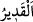

nefy etmek demektir. Allah’tan başkasının mânâ olarak mutlak kudretle vasfedilmesi
muhaldir. Lafız olarak mutlak kudretle vasfedilecek olsa bile, “Şuna kâdirdir” denilmesi
daha uygun olur. Bir kimse hakkında “O, kâdirdir” denildiği zaman bu, onun sınırlı bir
güce sahib olduğu mânâsında söylenmiş bir sözdür. Bu yüzden Allah’tan başka bir
yönden kudretle vasfedilen hiçbir kimse yoktur ki başka bir yönden acziyet ile
vasfedilmesi mümkün olmasın. Her yönden acziyet kendisinden uzak olan sadece Allah
Teâlâ’dır.
“ ne eksik ne fazla hikmetin gerektirdiği kadar dilediğini yapan demektir. Onun
için bu lâfızla Allah’tan başkasının vasfedilmesi doğru olmaz.
Ey yüce Allah’ım, ne kadar “kayyûm”sun, ne kadar “âlim”sin
Güçsüz olan herkese güç kuvvet veren sensin
Âyette Allah’ın izni olmadan kâfirlerle savaşa girişmenin câiz olmayacağına işâret
vardır. Bunun için Musa (a.s.) Kıptîye bir yumruk vurup onu öldürünce: “Bu şeytan
işidir.” (el-Kasas, 28/15) dedi. Çünkü ona bu konuda Allah tarafından izin verilmiş
değildi. Bu mânâ ile o işâret etmektedir ki nefis kâfiri ile savaş ve cihadda uygun olan,
bunun şerîat uyarınca Allah’ın izni ile olmasıdır. Bunun zamanı da bülûğdan sonradır.
Çünkü şer‘î mükellefiyetleri yüklenen insan şahsiyetinin, büluğdan önce henüz
olgunlaşıp kemâle ermemiş olmasından dolayı mücâhedeye uygun düşmez. Bu yüzden
kişi bülûğdan önce mükellef değildir. Mücâhedenin ifrat ve tefritten uzak olması
gerekir. Bilakis mücâhede nefsin kalbe zulmüne göre olur. Bu zulüm ise dünya
lezzetlerinden hazlarını ve şehvetlerini tam olarak tatmin konusunda şerîata muhâlefet,
tabîata muvâfakat gibi hususlarla meşgul ederek nefsin kalbi ona zarar verecek şeylerle
istîlâ etmesidir. Çünkü kalb aynasının bulanması, kalbin katılaşması ve kararması
bunlardan meydana gelir. Nefis terbiye edilir, kötü sıfatlarından kurtulur, şerîata boyun
eğer, tab‘ını terk eder, zikrullah ile huzur bulur ve “Sen Rabbinden razı, Rabbin de
senden razı olarak O’na dön!” (el-Fecr, 89/28) cezbesini kabule istidad kazanırsa,
işte o zaman aşırı mücâhededen korunur. Fakat yine de nefsin mekrinde gizlenmiş olan
Allah’ın mekrinden emin olamaz.
Âyetin sonu, Allah’ın yardımı olmadan insanın mutedil bir cihad ile nefsin hakkından
gelemeyeceğine ve onu tezkiye edemeyeceğine işâret etmektedir.
Hizmet ve kulluk için yüzünü yere koyunca, secdeye varınca
Allah’a hamd et, kendini görme; bu yaptığını kendinden bilme
Eğer Hak’tan tevfik olmasa, bir hayır ulaşmaz
Öyle ise bir kuldan bir başkasına bir hayır nasıl ulaşır?